Authors: G. M. Delgado, J. E. G. Silva
Type: theory · Category: other · PDF: https://arxiv.org/pdf/2609.26988v1
Analysis basis: full PDF text, analyzed in chunks
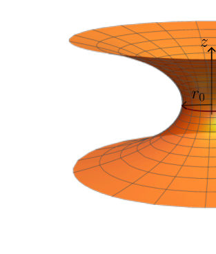
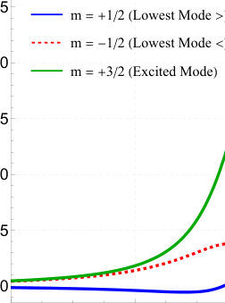
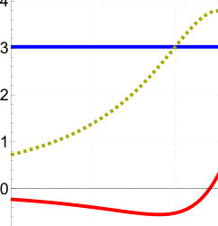
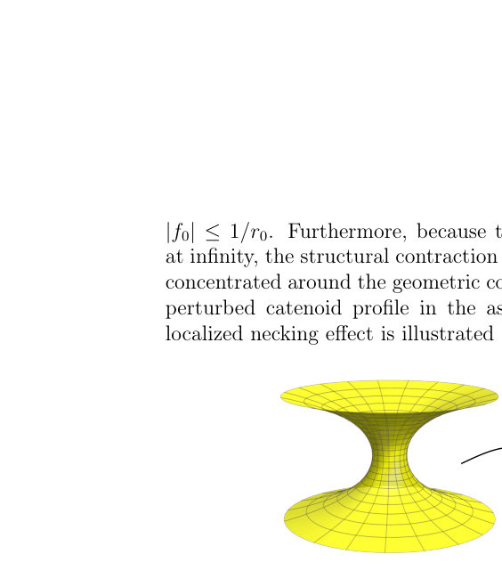
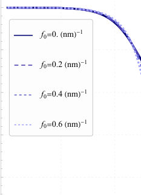
Summary. This work theoretically examines the quantum dynamics of electrons on a twisted graphene catenoid bridge, treating the geometry via the curved Dirac equation. The key finding is that the geometric twist introduces a potential barrier that severely suppresses electron tunneling between the two graphene layers. This demonstrates a method to control quantum transport using purely mechanical deformation.
Why it may be interesting. The explicit coupling between geometry (torsion/curvature) and quantum transport provides a powerful, tunable mechanism for controlling electronic properties in 2D materials, relevant for designing topological electronic devices.
Main problem. The study investigates how geometric deformations, specifically torsion and curvature, control the quantum electronic transport of massless Dirac fermions confined to a twisted graphene catenoid bridge.
Main result. The geometric twist significantly enhances the potential barrier at the catenoid throat, leading to a strong suppression of the inter-layer quantum transmission coefficient.
Method. The analysis employs a continuum approach using the covariant curved Dirac equation, solving the resulting effective 1D Klein-Gordon-like equation via separation of variables and numerical scattering methods.
Model / system. The system is a twisted graphene catenoid bridge, modeled by massless Dirac fermions whose dynamics are governed by a curved Dirac equation incorporating curvature and torsion terms.
Key observables. Inter-layer transmission probability T(epsilon), electronic energy states, and the geometric phase acquired by the wave function.
Important parameters / regimes. Torsion rate ($f_0$), incident energy ($\epsilon$), and the characteristic length scale ($r_0$) of the catenoid.
Assumptions / limitations. The analysis assumes a linear dispersion relation (graphene-like) and utilizes a continuum approximation, neglecting microscopic lattice changes.
Figures summary. Figures illustrate the spatial profile of the twist-induced potential barrier and show the calculated transmission probability T(epsilon) decreasing as the torsion rate $f_0$ increases.
Paper structure. The paper progresses from deriving the effective Hamiltonian using the curved Dirac equation, simplifying the coupled equations via coordinate transformations, and finally performing a numerical scattering analysis to calculate the transmission probability.
The interplay between non-trivial background geometries and quantum dynamics has emerged as a powerful tool to tailor the electronic properties of 2D materials. In this work, we investigate the effective quantum dynamics of massless Dirac fermions confined to a twisted graphene structure called a catenoid bridge, which connects two single-layer sheets. By adopting a continuum approach, where the electron dynamics is governed by a purely covariant curved Dirac equation, we obtain the effective Hamiltonian containing both curvature and twist interactions. We found that the torsion modifies the electronic states by producing a geometric phase on the wave function. In addition, the twist also deforms the surface geometry, which leads to a new geometric term in the effective Hamiltonian. This twist potential enhances the barrier around the catenoid throat, which increases the suppression of the inter-layer transmission coefficient. Like the spin-curvature interaction, the spin-twist term has a chiral dependence which is invariant under a combined parity and spin flip transformation. As a result, the electronic states can be restricted to the upper or lower layer. These findings provide valuable insights into how mechanical deformations can be harnessed to control quantum transport in graphene-based wormhole architectures.
Authors: Chengyu Wang, C. T. Tai, N. Toemtrisna, A. Gupta, L. N. Pfeiffer, K. W. Baldwin, M. Shayegan
Type: experiment · Category: strongly correlated electrons · PDF: https://arxiv.org/pdf/2609.26916v1
Analysis basis: full PDF text, analyzed in chunks
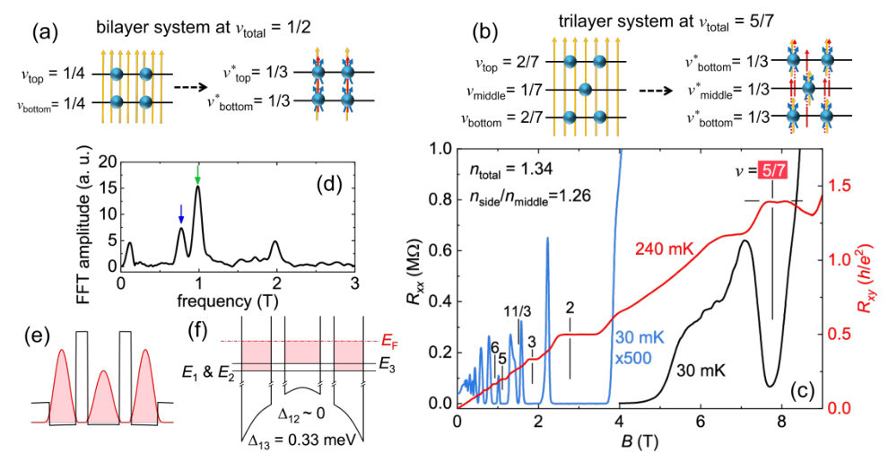
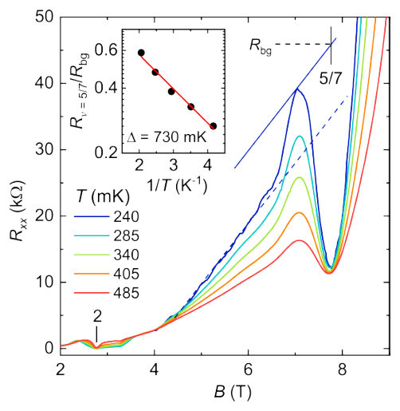
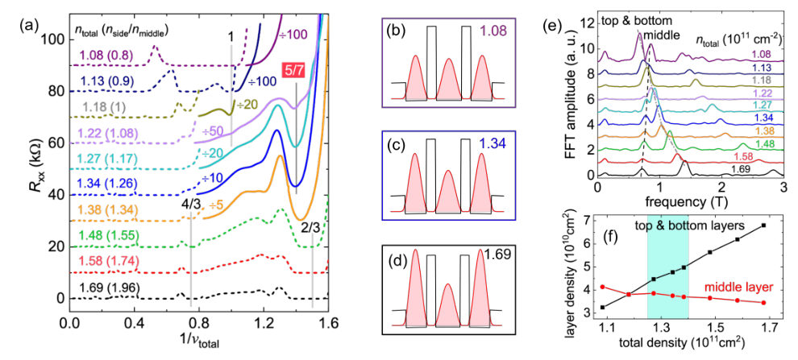
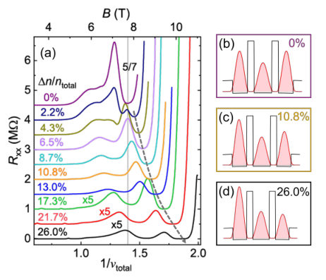
Summary. This experiment reports the discovery of an exotic Fractional Quantum Hall State ($\nu=5/7$) in a trilayer electron system using GaAs quantum wells. By analyzing transport measurements and layer densities, the authors confirm that the state exhibits genuine interlayer correlation across three coupled layers. This extends the understanding of correlated electron physics beyond previously studied bilayer systems.
Why it may be interesting. This work directly probes the limits of electron correlation physics in multi-component systems, providing experimental evidence for theoretical predictions regarding higher-order generalizations of Laughlin states, which is a key area in strongly correlated electron physics.
Main problem. The study investigates exotic, multi-component, many-body states, specifically Fractional Quantum Hall States (FQHSs), in systems involving three or more coupled quantum layers.
Main result. The authors observed a novel interlayer-correlated FQHS at total filling factor $\nu=5/7$ in a trilayer electron system, confirming the existence of generalized Laughlin states extending coherence to three layers.
Method. The research combines transport measurements (measuring $R_{xx}$ and $R_{xy}$ vs. magnetic field) with Fast Fourier Transform (FFT) analysis of Shubnikov-de Haas oscillations to characterize the correlated state and layer densities.
Model / system. The physical system is a trilayer two-dimensional electron system realized in ultra-high-quality GaAs triple quantum wells. The theoretical framework involves generalized Laughlin wave functions, extending concepts from bilayer systems.
Key observables. Deep longitudinal resistance minimum ($R_{xx}$) and quantized Hall plateau ($R_{xy}$), specifically observed at $\nu_{total} = 5/7$ (quantized at $7h/5e^2$).
Important parameters / regimes. Total filling factor $\nu_{total}$, interlayer distance $d$, magnetic length $l_B$, and layer density ratios ($n_{side}/n_{middle}$).
Assumptions / limitations. Interlayer tunneling between neighboring layers is assumed to be negligible for the primary state description; careful averaging of $B^+$ and $B^-$ data is necessary to mitigate $R_{xx}$ mixing into $R_{xy}$ measurements.
Figures summary. Figures show $R_{xx}$ and $R_{xy}$ vs. $B$ confirming the $\nu=5/7$ FQHS, temperature dependence confirming the energy gap, and FFT analysis used to determine layer densities.
Paper structure. The paper progresses by first establishing the experimental platform and analyzing layer densities via FFT. It then presents transport measurements showing the $\nu=5/7$ FQHS, followed by detailed analysis of how charge imbalance ($\Delta n$) affects the state, leading to the conclusion of genuine trilayer correlation.
In multilayer quantum Hall systems, when the layer separation is sufficiently small, the interplay between intralayer and interlayer Coulomb interactions can lead to exotic, multi-component, many-body states. A particular example is the even-denominator fractional quantum Hall state (FQHS) at total filling factor $ν=1/2$ in bilayer systems with negligible interlayer tunneling. This state can be understood as a generalized Laughlin state described by the Halperin-Laughlin $Ψ_{331}$ wavefunction. While such correlated states have been extensively explored in bilayers, little is known about their counterparts in systems with more than two layers. Here, we investigate a trilayer two-dimensional electron system confined to ultrahigh-quality GaAs triple quantum wells. We observe an exotic FQHS at total filling factor $ν=5/7$, evinced by a deep longitudinal resistance minimum and a quantized Hall plateau, when the side layers have a density larger than the middle layer and $d/l_B \simeq 2.2$ ($d$ is the interlayer distance and $l_B$ the magnetic length). This state is naturally interpreted as the long-predicted trilayer, generalized Laughlin ($Ψ_{33311}$) state, characterized by $ν=1/3$-like intralayer correlation within each layer and $ν=1$-like interlayer correlation between neighboring layers. Our observation establishes a new member of the Halperin-Laughlin many-body states that extends interlayer coherence to three coupled layers.
Authors: I. A. Kokurin
Type: theory · Category: other · PDF: https://arxiv.org/pdf/2609.27054v1
Analysis basis: full PDF text, analyzed in chunks
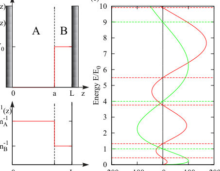
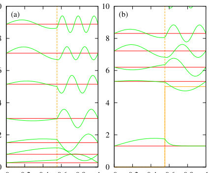
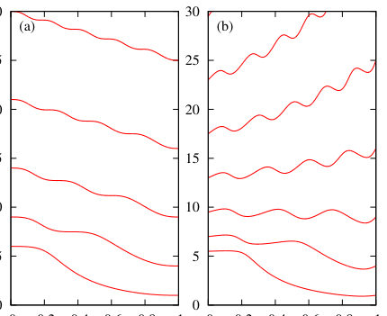
Summary. This paper analyzes quantum confinement in semiconductor heterostructures, showing that confinement depends critically on both potential barriers and the spatial variation of the effective mass. By modeling a Structured Quantum Well, the authors demonstrate that the wave function localization can be engineered by controlling the mass profile, which is highly relevant for advanced semiconductor device design.
Why it may be interesting. The explicit inclusion of the kinetic energy contribution via the effective mass term provides a powerful extension to standard quantum well models, offering new design rules for semiconductor devices like quantum cascade lasers.
Main problem. To investigate quantum confinement in semiconductor heterostructures where the confinement mechanism is governed not only by band offsets but also by the spatial variation of the effective mass.
Main result. The localization of carrier wave functions can be controlled by engineering the effective mass profile, allowing different electronic subbands to localize in distinct spatial regions.
Method. The problem is solved by treating the effective mass Hamiltonian as a 1D spectral problem, utilizing both boundary condition matching and matrix diagonalization techniques.
Model / system. The model is a Structured Quantum Well (SQW) consisting of multiple semiconducting layers with varying effective masses and potential barriers. The governing equation is the effective mass Hamiltonian: H = -hbar^2/(2) * div(1/m(z)) * div + U(z) + V(z).
Key observables. Subband energy spectrum E_i(k) and the spatial wave functions psi_i(z; k).
Important parameters / regimes. Effective masses (m_A, m_B), barrier height (V_0), and heterointerface position (a).
Assumptions / limitations. The analysis is performed using a simple model system and assumes the effective mass approximation is valid.
Figures summary. Figure 1 shows the potential and inverse effective mass profiles. Figure 2 compares wave functions for zero and non-zero barriers. Figure 3 illustrates the non-monotonic dependence of subband energies on the heterointerface position a when effective masses differ.
Paper structure. The paper establishes the general effective mass Hamiltonian, derives the spectral problem, and then applies both boundary condition and matrix diagonalization methods to analyze how the total energy (potential + kinetic) dictates carrier localization.
Usually in semiconductor heterostructures, such as quantum wells, the quantum confinement is realized by means of heterobarriers, which are simply the band offsets in adjacent materials. Here the arguments are provided, that the energy dispersions in materials (in simple case determined by effective masses) are important as well. Using a simple model system, such as quantum well with an additional heterojunction, it is shown the predominant localization of the carrier density in the regions with higher effective mass. The possibility of different spatial localization of wave function for different subbands is predicted. This can be applied in semiconductor structures such as quantum cascade lasers.